Longren Antarctic Newsletter #07 - 13.02.2023 ------------------------------ Dearest people, Starting off, I want to welcome the people that have been added to the newsletter recently. I appreciate the interest and hope you enjoy the content. As a recap of what I have been up to, I've been working in cargo since last October at McMurdo Station, Antarctica, the largest station on the continent (currently, around a thousand people live here). My contract ran for the length of the austral summer and ended this month, at at which point my plan was originally to return to Berlin. That was the plan at least. Fast forward to present day, it turns out I'll be staying for the winter as well, making it a whole year here. Planes are not flying during the dark and stormy months between May and August, therefore Cargo isn't running. As it happens, I was hired as the wintering Research Associate, where I will monitor, maintain, and perform repairs as-needed on the equipment for over a dozen scientific projects. I'm currently in the process of transitioning from Cargo nights to Crary days (the largest lab here is named after Albert Crary, a geophysicist/ glaciologist who was the first person to set foot on both the North and South Poles) and start my first day of the new job tomorrow. The winter season runs until October, at which point my plan is to return to Berlin and stay through the rest of the year and holiday season. The big update aside, I am going to miss your faces. It was not a light decision to make, though in the end I came to the conclusion that I would regret not staying. I very much look forward to catching up with you when I finally step off the ice and return to the north. In the meantime, I want to share with you a recap of my summer season here in Antarctica. Arriving on the ice was breathtaking, not only due to the cold, dry air and the scenery, but instead caused by the whole ordeal becoming real. The curtain was pulled back, imagination began to be replaced with experience, and the acute fact that there was no easy way off this island that the station sits upon stared all of us newcomers directly in the eyes. As the weeks being here became months, the shininess wore off, routine set in and with it, exhaustion. Making it through my final days working Cargo was tougher than expected. Nevertheless, I've made it to my three days of "fall break" and am excited to begin a special job supporting Antarctic science. To end the summer here, I want to share with you a couple handfuls of photos that will help to summarize my last few months. I hope you enjoy them. 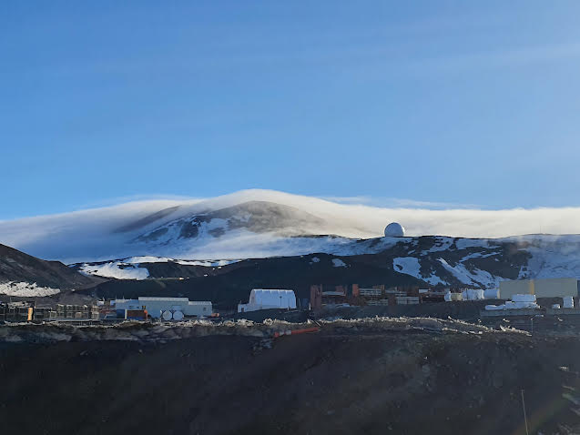 Weather rolling into town from a nearby hilltop. 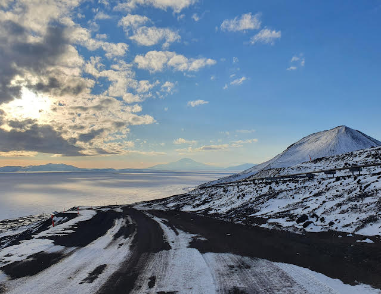 The drive back to town from the airfield. A majority of summer days hold lovely weather, with blue skies and a light draping of snow. 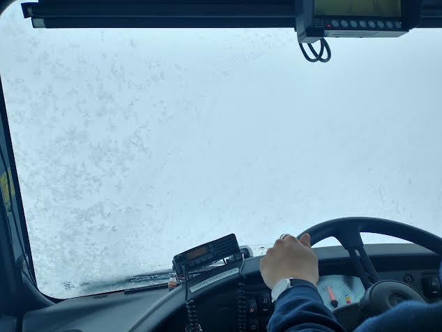 Other days, the sky is covered and the winds are strong, making the view out the window a solid white mass of snow, fog, or mist. 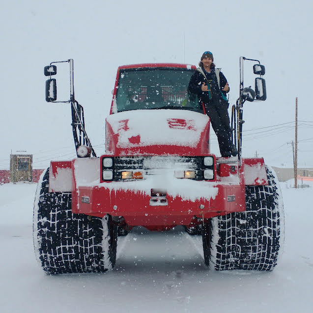 It is a dry place and snow from the sky is rare. I was working my first strong snowfall, measuring up to the calf, when we took a couple photos, walked back to town, and had a great snowball fight with everyone working that night. 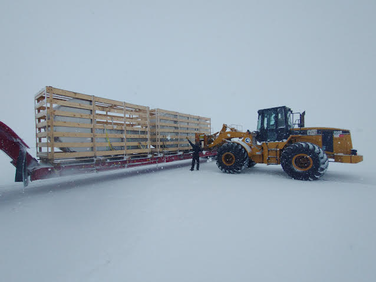 Much of my work was unloading cargo from planes, putting them onto a big truck (the Kress), and driving the cargo into town (or doing everything in reverse). Here, we are unloading cargo that was then taken on a sled to the Pole via SPoT. 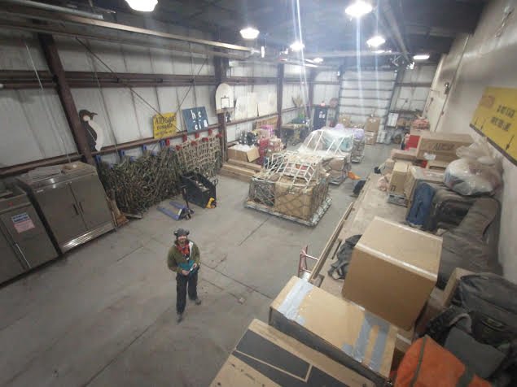 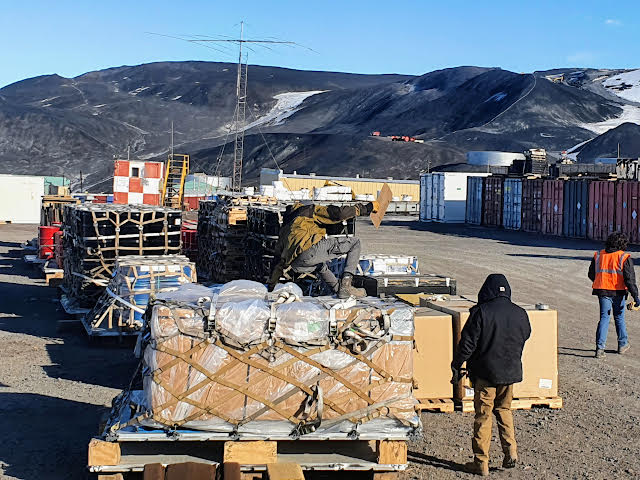 A lot of cargo that shouldn't be frozen is kept in the bay (top). All the other stuff can be put in the yard (bottom). 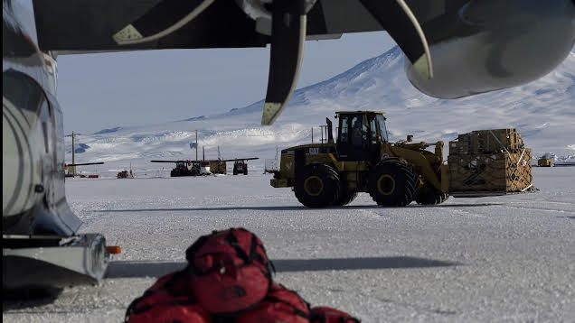 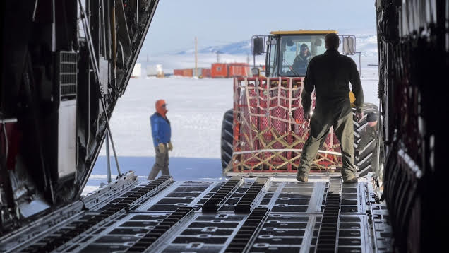 At the airfield, we load and unload all the planes with standardized cargo pallets strapped down with all sorts of stuff. 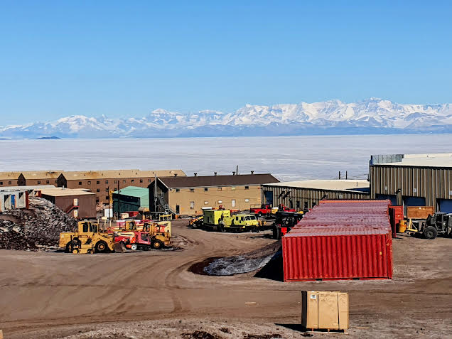 Living is intermixed within the work on the island. In the background, across the frozen ocean, the main continent is seen. 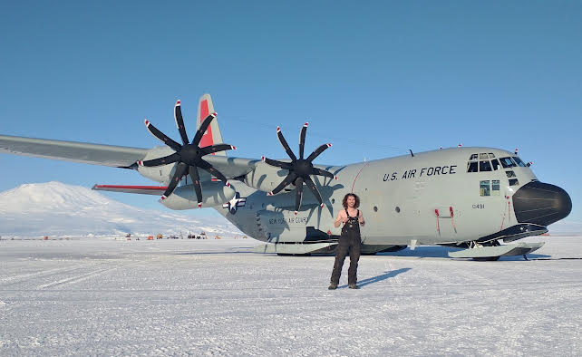 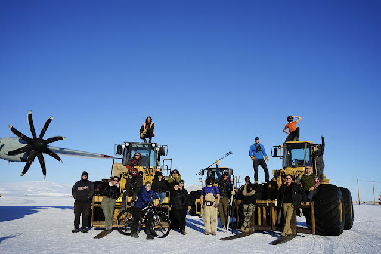 Last month, we took the entire shift crew and had a photoshoot out at the airfield. At top, you can see me posing with an LC-130 and the nearby volcano in the background. At bottom is a shift photo with all the people I've worked alongside in cargo over the summer. 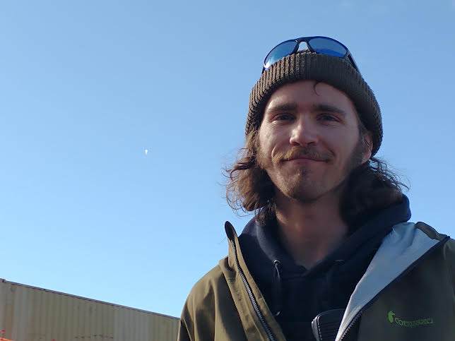 Finally, here's me (right) posing with the Long Duration Balloon (left) that circled Antarctica for a few weeks imaging space dust. This will be the last newsletter I send for the foreseeable future. Over the next week, I'll be adjusting to the new lab job. Over the next month, I'll see the station population drop to around 150 people. Then towards May, the sun will fade away and the darkness will creep in for a few months. I'm excited for the station to calm down, to see the southern lights and the beautiful storms. In the meantime, I hope you stay well. Thanks for reading. Luke 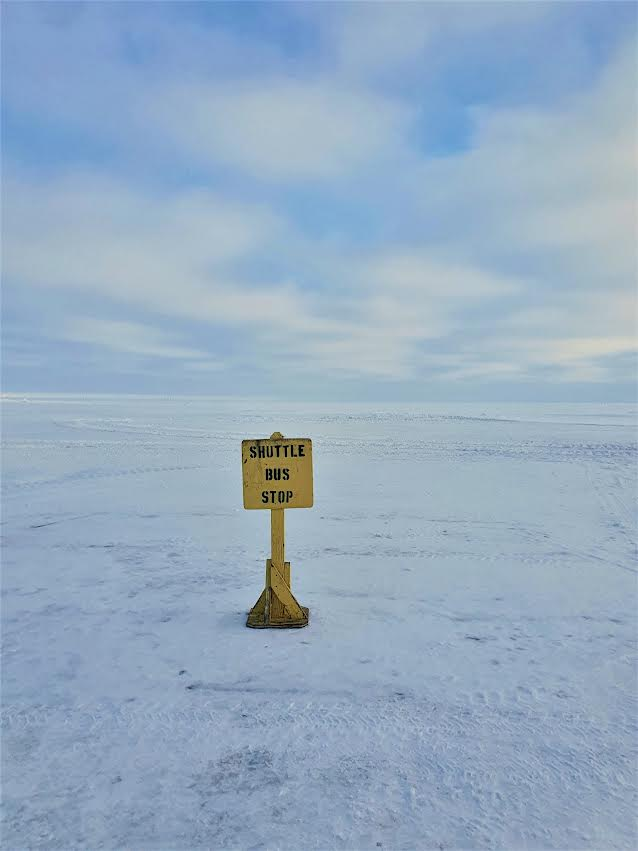 ------------------------------ ------------------------------ If you think that someone would be interested in learning about the Antarctic and what working there is like, please do forward this letter to them. If you would like to be removed from this newsletter, just email me and I can do so. Lastly, if you have any questions about life, work, or anything else regarding Antarctica, send me an email and I can try to answer your question in the next letter. Thank you! |